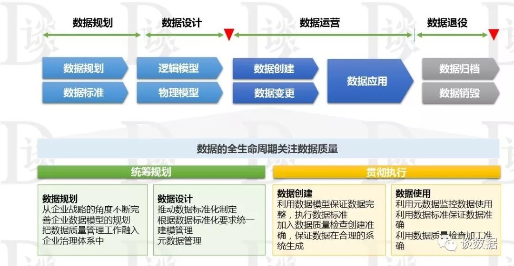

数据质量控制理论与实践经验
转自公众号：数仓与大数据
http://mp.weixin.qq.com/s?__biz=Mzg4NTI1MjkxOA==&mid=2247484771&idx=1&sn=284f445aa7deb342624cf0ed3e9a7e2f
笔者观点：“数据质量管理不单纯是一个概念，也不单纯是一项技术、也不单纯是一个系统，更不单纯是一套管理流程，数据质量管理是一个集方法论、技术、业务和管理为一体的解决方案。通过有效的数据质量控制手段，进行数据的管理和控制，消除数据质量问题进而提升企业数据变现的能力。在数据治理过程中，一切业务、技术和管理活动都围绕这个目标和开展”。
备注：我觉得最后一句话不太严谨，因为数据质量只是数据治理的一个子集。
注：以上总结摘抄自公众号“谈数据”，作者石秀峰
0x00 聊聊四个常见的数据管理知识体系
网上数据质量相关的文章真多，而且阅读量都还挺高，很多数据方面的号主也喜欢反复写。由此可见，数据质量对于数据工作者的重要性非常之高。
DAMA 知识体系
国际数据管理协会（DAMA 国际）是一个全球性的专业组织，成立于 1980 年，一直致力于数据管理和数字化的研究、实践及相关知识体系的建设。主要包含两部分：DAMA 数据管理知识体系和专业考试认证。
DAMA 数据管理知识体系（DMBOK框架），有车轮图（由 11 个数据管理职能领域）和环境因素六边形图（包含 7 个基本环境要素）构成。其中，数据管理职能包括数据治理、数据架构、数据建模和设计、数据存储和操作、数据安全、数据集成和互操作、文档和内容管理、参考数据和主数据管理、数据仓库与商务智能、元数据管理、数据质量管理。基本环境要素包括目标与原则、组织与文化、工具、活动、角色和职责、交付成果、技术。

DAMA 金字塔图（Aiken 金字塔）中的四个阶段
DAMA 金字塔图,从数据、信息到知识逐层递进，将数据管理知识划分为四个阶段，指导大家分阶段学习 DAMA 知识体系和开展数据管理工作。
专业考试认证，在国外的名称是数据管理专业人员认证( CDMP )，引入国内后，DAMA 中国对 CDMP 进行了适当本地化重构。分为：数据治理工程师( CDGA)和数据治理专家( CDGP )，三个证书国际通用。
对于个人来说，想长期从事数据管理方面工作，有证和没证多少还是有些区别的。退一步讲，不为考证，学点知识也是好的。
数据管理成熟度评估模型
DCMM 是国家工信部信软司主导，具有中国特色，在数据管理领域的国家级标准。是企业数据管理能力建设的指导性理论和能力评估标准。

DCMM 建设概念图
DCMM 等级定义
DCMM 将数据管理能力成熟度划分为五个等级，自低向高依次为初始级、受管理级、稳健级、量化管理级和优化级，不同等级代表企业数据管理和应用的成熟度水平不同。
当然了，国家的认证对很多企业还是很有吸引力的，这不还有人付费求 DCMM 评估申请材料模板的：付费求一套文件！！！
最近国家层面的数据管理证书 CDP（Certified DCMM Professional）也马上要出台了，该证书也是依赖于 DCMM 体系。喜大普奔！工信部数据管理人才证书！！！
数据治理
数据治理概念也是这几年国内的热点了，数据方向的面试也经常被问到，但每个人对其理解差异也很大。
这里给出认可读比较高的 DAMA 国际的定义：数据治理是对数据资产的管理活动行使权力和控制的活动集合（规划、监控和执行）。
数据治理是一个大而全的知识体系。在数据管理的几乎所有领域（或者数据生产加工应用全流程），数据治理都应该参与其中，保证数据管理能够朝着一个更好的方向发展。
对于已经构建好的数据体系，我们需要搜集现有问题并排列好优先级，做为数据治理工作的阶段性目标，比如数据质量、成本控制、数据规范、数据模型、数据安全等等。
数据资产管理
数据管理的概念从 80 年代提出已经接近 40 年了，数据治理的提法也有近 20年了，而数据资产管理的提出基本是最近 5 年的事情。
数据资产（Data Asset）是指由企业拥有或者控制的，能够为企业带来未来经济利益的，以物理或电子的方式记录的数据资源，如文件资料、电子数据等。在企业中，并非所有的数据都构成数据资产， 数据资产是能够为企业产生价值的数据资源。
数据资产管理（DAM，Data Asset Management）是指规划、控制和提供数据及信息资产的一组业务职能，包括开发、执行和监督有关 数据的计划、政策、方案、项目、流程、方法和程序，从而控制、保 护、交付和提高数据资产的价值。数据资产管理是需要充分融合业务、 技术和管理，来确保数据资产保值增值。
企业管理数据资产就是通过对数据的生命周期的管理，提高数据资产质量，促进数据在“内增值，外增效”两方面的价值变现。数据先被规范性定义、创建或获得，然后存储、维护和使用，最终被销毁。数据的生命周期开始于数据获取之前，企业先期制定数据规划、定义 数据规范，以期获得实现数据采集、交付、存储和控制所需的技术能 力。数据资产管理一般来说包括统筹规划、管理实施、稽核检查和资 产运营四个主要阶段。
数据资产的落地手段：
在底层包括数据资产目录、数据分级分类、数据地图、数据安全和数据质量保障机制。
在上层我们需要建立指标体系、标签体系。
最后我们需要建立起一套有效的评估体系，去检测数据管理成本和数据应用价值。
数据仓库
这个就不必再做介绍了。本系列主题部分共计十篇，数据治理是单独的一篇，可见其重要性。但如果有人问我，数据仓库最重要的是什么，我会回答数据应用和数据质量。
我们所有数据管理工作开展的终极目标就是获取信息创造价值（了解业务现状、预测趋势、支持决策、发现商机、辅助运营、数据交易等等），而价值的最终体现基本上都在应用上，比如各种报表、分析报告、用户画像、运营支撑、风控，甚至数据交易、联合建模。当然这个价值可以是现在的也可以是未来的。
数据的各种应用解决了数据怎么用的问题，我们依托应用去创造价值。而数据质量是应用能够最终真正有用的必要条件。试想一下错误的数据、缺失的数据、迟到的数据对于数据的价值体现，轻则无法使用，重则造成决策失误引起重大损失。
0x01 五大数据质量评估标准
从数据本身的角度：完整性、准确性、一致性、时效性（及时+有效）。
从数据使用的角度：可访问性。

完整性
完整性是指数据的记录和信息是否完整，是否存在数据缺失情况。数据缺失主要包括记录的缺失和重要字段信息的缺失，两者都会造成统计结果不准确。
完整性是数据质量最基础的保障。
例如，某个稳定业务的数据量每天约为 100 万条记录，某天突然下降了 1 万条，则可能是出现了记录缺失。
例如，某科高考成绩表中，每个考卷分数都对应一个准考证号，当准考证号字段的空值数大于0时，则可能是出现了信息缺失。
一致性
一致性通常体现在跨度很大的数据仓库中。
例如，某公司有很多业务数仓分支，对于同一份数据，在不同的数仓分支中必须保证一致性。
例如，从在线业务库加工到数据仓库，再到各个数据应用节点，用户 ID 必须保持同一种类型，且长度也要保持一致。因此，您需要设计数仓的公共层以确保数据的一致性。
准确性
准确性是指数据中记录的信息和数据是否准确、是否存在异常或者错误的信息。
例如，成绩单中分数出现负数或订单中出现错误的买家信息等，这些数据都是问题数据。
确保记录的准确性也是保证数据质量必不可少的一部分。
时效性
包含两部分：及时+有效。保障数据的及时产出才能体现数据的价值，同时对于部分时间敏感型的数据也必须在有效期内使用才行。
例如，决策分析师通常希望每天上班时候前就能看到前一天的数据。若等待时间过长，数据失去了及时性的价值，数据分析工作将失去意义。
例如，运维人员需要在收到故障告警的同时立刻能够拿到关键的运行日志数据，以便更快的排查问题恢复系统。
有效性
指数据的值、格式和展现形式符合数据定义和业务定义的要求。好吧，这个可以拿掉，应该也是属于准确性的范畴吧。
可访问性
对数据用户来讲，最核心的需求是当他们需要用数据的时候，这些数据是可以被访问的。他们想知道企业有哪些数据？存放在哪里？以及如何访问到这些数据？我们看到很多数据平台提供的统一数据资源目录功能就是解决这个问题的。
数据质量问题，可以分为这么三类：
源端数据问题（不准确、不一致、不完整、不可访问）
数据处理问题（同步集成、计算、存储、查询）（不准确、不一致、不完整、不及时、不可访问）。
数据口径不一致、各方理解偏差（不准确、不一致）。
数据质量保障，是一个系统化的工程，我们需要全局协调一致才行。为了让大家有更深刻的体会，接下来，我们从三个角度分别给大家阐述。
0x02 技术业务管理三位一体的保障体系
技术
我们需要保证数据从源端到最终应用端流转过程中的数据质量，一方面我们需要提高每一位数据开发者的技术能力来提高模型和 ETL 的设计与落地质量，另一方面我们使用数据质量工具来对 ETL 过程进行监控。对于源端的数据问题，有时候也可以通过技术手段解决，比如编码映射、ID-Mapping、缺失值补全等等。
数据模型设计的质量问题，例如：数据库表结构、数据库约束条件、数据校验规则的设计开发不合理，造成数据录入无法校验或校验不当，引起数据重复、不完整、不准确。
数据源存在数据质量问题，例如：有些数据是从生产系统采集过来的，在生产系统中这些数据就存在重复、不完整、不准确等问题，而采集过程有没有对这些问题做清洗处理，这种情况也比较常见。
数据采集过程质量问题， 例如：采集点、采集频率、采集内容、映射关系等采集参数和流程设置的不正确，数据采集接口效率低，导致的数据采集失败、数据丢失、数据映射和转换失败。
数据传输过程的问题，例如：数据接口本身存在问题、数据接口参数配置错误、网络不可靠等都会造成数据传输过程中的发生数据质量问题。
数据装载过程的问题，例如：数据清洗规则、数据转换规则、数据装载规则配置有问题。
数据存储的质量问题，例如：数据存储设计不合理，数据的存储能力有限，人为后台调整数据，引起的数据丢失、数据无效、数据失真、记录重复。
系统之间的数据不一致问题。
业务
有时候，数据质量问题的根本原因是业务问题造成的，我们就需要从业务着手解决。
我们需要有业务专家或者业务部门参与，统一数据口径、纠正理解偏差、通过深入的沟通明确业务方诉求。
数据质量改进的驱动因素永远来自业务目标，不能脱离业务需求谈数据质量。制定数据质量改进方案的基础，首先是清晰定义业务需求，然后是根据业务需求对企业业务的长期影响来定义数据质量问题的优先级。衡量业务影响、定义问题优先级有助于明确治理目标并跟进数据质量改进的进度。
业务需求不清晰，例如：数据的业务描述、业务规则不清晰，导致技术无法构建出合理、正确的数据模型。
业务需求的变更，这个问题其实是对数据质量影响非常大的，需求一变，数据模型设计、数据录入、数据采集、数据传输、数据装载、数据存储等环节都会受到影响，稍有不慎就会导致数据质量问题的发生。
业务端数据输入不规范，常见的数据录入问题，如：大小写、全半角、特殊字符等一不小心就会录错。人工录入的数据质量与录数据的业务人员密切相关，录数据的人工作严谨、认真，数据质量就相对较好，反之就较差。
数据作假，对，你没看错，就是数据作假！操作人员为了提高或降低考核指标，对一些数据进行处理，使得数据真实性无法保证。
管理
技术再努力起到的作用毕竟有限，有些事情必须通过管理手段去约束。通过管理使得规范得以贯彻，通过管理来提高团队成员的数据质量意识，通过管理手段去协调各个参与方提高效率。
可以建立数据质量保障委员会，源端团队负责人、数据团队负责人、业务团队负责人，都要参与其中。统一规划顶层设计，制定统一数据架构、数据标准，设计数据质量的管理机制，采用分类处理的方式持续提升数据质量。源端的数据问题最好在源端解决，建立指标体系统一各方的数据口径，明确数据问题的责任谁的问题谁解决。
总之，只有管理上重视了，整体工作才好开展。
认知问题。企业管理缺乏数据思维，没有认识到数据质量的重要性，重系统而轻数据，认为系统是万能的，数据质量差些也没关系。
没有明确数据归口管理部门或岗位，缺乏数据认责机制，出现数据质量问题找不到负责人。
缺乏数据规划，没有明确的数据质量目标，没有制定数据质量相关的政策和制度。
数据输入规范不统一，不同的业务部门、不同的时间、甚至在处理相同业务的时候，由于数据输入规范不同，造成数据冲突或矛盾。
缺乏有效的数据质量问题处理机制，数据质量问题从发现、指派、处理、优化没有一个统一的流程和制度支撑，数据质量问题无法闭环。
缺乏有效的数据管控机制，对历史数据质量检查、新增数据质量校验没有明确和有效的控制措施，出现数据质量问题无法考核。
小结：影响数据质量的因素，可以总结为两类，客观因素和主观因素。客观因素：在数据各环节流转中，由于系统异常和流程设置不当等因素，从而引起的数据质量问题。主观因素：在数据各环节处理中，由于人员素质低和管理缺陷等因素，从而操作不当而引起的数据质量问题。
0x03 数据全周期管理保障体系
数据的生命周期从数据规划开始，中间是一个包括设计、创建、处理、部署、应用、监控、存档、销毁这几个阶段并不断循环的过程。企业的数据质量管理应贯穿数据生命周期的全过程，覆盖数据标准的规划设计、数据的建模、数据质量的监控、数据问题诊断、数据清洗、优化完善等方面。

数据规划。从企业战略的角度不断完善企业数据模型的规划，把数据质量管理融入到企业战略中，建立数据治理体系，并融入企业文化中。
数据设计。推动数据标准化制定和贯彻执行，根据数据标准化要求统一建模管理，统一数据分类、数据编码、数据存储结构，为数据的集成、交换、共享、应用奠定基础。
数据创建。利用数据模型保证数据结构完整、一致，执行数据标准、规范数据维护过程，加入数据质量检查，从源头系统保证数据的正确性、完整性、唯一性。
数据使用。利用元数据监控数据使用；利用数据标准保证数据正确；利用数据质量检查加工正确。元数据提供各系统统一的数据模型进行使用，监控数据的来源去向，提供全息的数据地图支持；企业从技术、管理、业务三个方面进行规范，严格执行数据标准，保证数据输入端的正确性；数据质量提供了事前预防、事中预警、事后补救的三个方面措施，形成完整的数据治理体系。
0x04 数据流转链路保障体系
数据源。源端的数据问题，最好在源端解决。有时候基于降低下游计算复杂度而对源端做些改造也是必要的。源端解决不了的问题需要跟数据应用端协商一致制定改造方案。
数据集成存储计算。通过制定规范保证设计和开发的高质量开展减少错误，通过数据质量稽核工具及时发现数据问题，通过监控告警程序实时发现并处理 ETL 任务异常。
数据应用。统一口径、纠正理解偏差。
0x05 数据处理前中后三阶段保障体系
事前预防控制。数据开发人员需要提高保证数据质量意识，同时组织内构建完善的数仓规范，保障模型设计、ETL 开发等核心流程的优质方法论能够切实得到贯彻。
事中过程控制。通过建立一套切实可行的数据质量监控体系、设计数据质量稽核规则、加强从数据源头控制数据质量、把控整个数仓设计和开发过程，形成覆盖数据全生命周期的数据质量管理。
事后监督控制。出现数据质量问题，清晰定位数据技术责任人，进行整改迭代，保证数据质量管理形成一个良性循环，实现数据向优质资产的转变。
Hi，我是王知无，一个大数据领域的原创作者。
放心关注我，获取更多行业的一手消息。


Flink CDC我吃定了耶稣也留不住他！| Flink CDC线上问题小盘点
4万字长文 | ClickHouse基础&实践&调优全视角解析